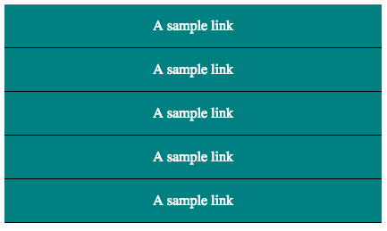
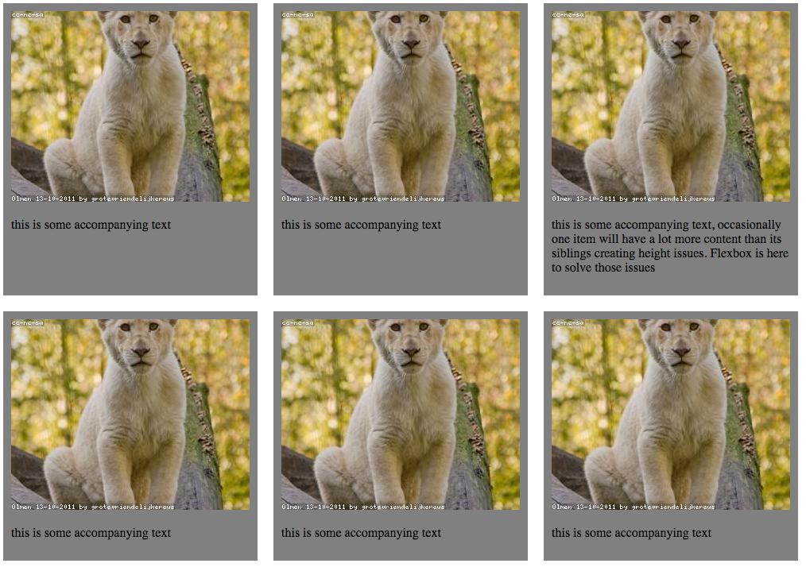
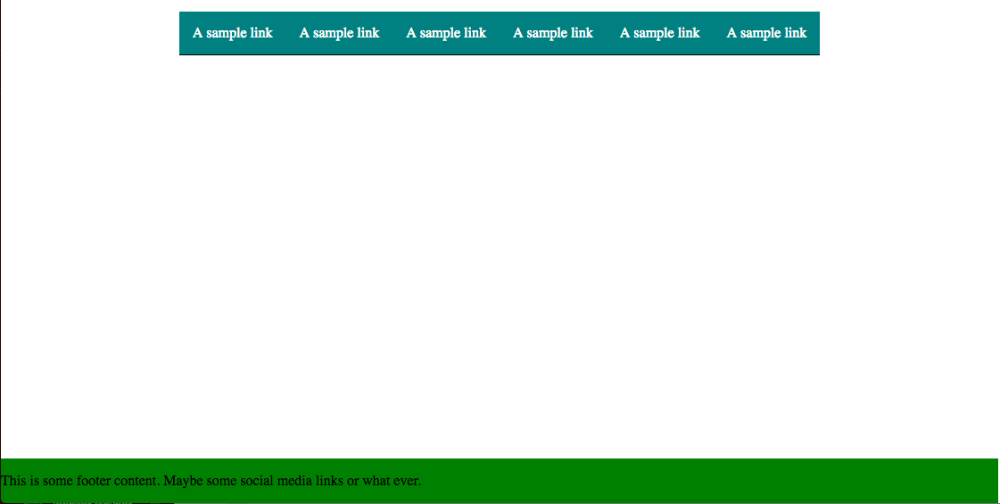
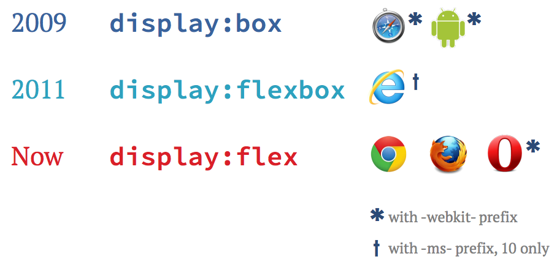

Flexbox
Why flexbox is awesome.
The Problem
- Current layouts rely on 'hacks'
- Floats and table cells
- Inline for horizontal elements
- Block for vertical elements
A versatile tool
Flexbox offers tools to tackle a large range of problems including:
- Navigation
- Inline Forms
- Page components/Elements
- Alignment Issues
Browser Support
Good support with a few gotcha's:
- No IE 8 or 9
- IE 10 and 11 support old syntax
- Vendor Prefixes
- Android Stock Browser quirks
The basics

- Direction specifies main axis
- Justify works on main axis
- Align works on opposite axis
- Basis defines starting size
- Grow and shrink work with remaining space
When to use flexbox?
Navigation
(or pagination)
.nav {
display: flex;
flex-direction: row;
justify-content: space-around;
}
.nav-item {
flex-grow: 1;
justify-content: center;
}
Mobile Navigation

.nav {
display: flex;
flex-direction: column;
justify-content: space-around;
}
@media screen and (min-width: 768px) {
.nav {
flex-direction: row;
}
}
Galleries
Galleries
.second-gallery .column-gallery-item {
width: 32.20339%;
float: left;
}
.second-gallery .column-gallery-item:nth-child(3n + 1) {
margin-left: 0;
margin-right: -100%;
clear: both;
margin-left: 0;
}
.second-gallery .column-gallery-item:nth-child(3n + 2) {
margin-left: 33.89831%;
margin-right: -100%;
clear: none;
}
.second-gallery .column-gallery-item:nth-child(3n + 3) {
margin-left: 67.79661%;
margin-right: -100%;
clear: none;
}
Galleries
.gallery {
display: flex;
flex-direction: row;
justify-content: space-between;
flex-wrap: wrap;
}
.gallery-item {
flex-basis: 33%;
flex-grow: 1;
}
Layout Techniques
Horizontal & Vertical Center
.center-vert {
display: flex;
align-items: center;
}
.center-horizontal {
display: flex;
justify-content: center;
}
.center-both {
display: flex;
justify-content: center;
align-items: center;
}
Flex Grids
.grid {
display: flex;
flex-direction: row;
flex-wrap: wrap;
}
.grid-item {
flex-basis: 33%;
flex-basis: percentage(1/3);
flex: 0 0 33%;
}
Visual Order
Flexbox is order agnostic
.container {
flex-direction: row-reverse;
}
.error {
order: 1;
}
Sticky Footer
Sticky Footer
body {
display: flex;
flex-direction: column;
min-height: 100vh;
}
.body-wrapper {
flex: 1 0 auto;
}
Common Gotchas
Prefixes & Syntax
Autoprefixer
(you're going to need it)
.plans {
display: -webkit-box;
display: -webkit-flex;
display: -ms-flexbox;
display: flex; }
.plans > div {
-webkit-box-flex: 1;
-webkit-flex: 1 1 33%;
-ms-flex: 1 1 33%;
flex: 1 1 33%;
display: -webkit-box;
display: -webkit-flex;
display: -ms-flexbox;
display: flex;
-webkit-box-orient: vertical;
-webkit-box-direction: normal;
-webkit-flex-direction: column;
-ms-flex-direction: column;
flex-direction: column;
-webkit-box-align: start;
-webkit-align-items: flex-start;
-ms-flex-align: start;
align-items: flex-start; }
.plans > div .stretch {
width: 100%;
-webkit-box-flex: 1;
-webkit-flex: 1 0 auto;
-ms-flex: 1 0 auto;
flex: 1 0 auto; }
Browser Quirks
- IE 10+ min-height/max-height issues
- Android Stock browser weirdness < 4.4
- Old versions of Firefox (we are talking really old) dont support flex-wrap
When not to use Flexbox
Pollyfill?
Yes!!
Sort of..."Sooooo not ready for prime-time."